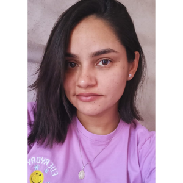

| E.E.F.T.I. FRANCISCA CLEOMAR VERAS FREITAS | |
Horário Completo
A partir de 31 de março de 2025
| Turma | Aula | Segunda | Terça | Quarta | Quinta | Sexta |
|---|---|---|---|---|---|---|
7º A | ||||||
| 1ª 7:20 às 8:10 | ELT Valdirene | GEO Helenice | GEO Helenice | PORT Salete | ||
| 2ª 8:10 às 9:00 | ED. F Marlos | CRS Geovane | PORT Salete | PORT Salete | ||
| 3ª 9:15 às 10:05 | PORT Salete | REL Romeryo | PC Claudia | PORT Salete | MAT Antonio | |
| 4ª 10:05 às 10:55 | CIE Nonata | IM Valdirene | ED. F Marlos | MAT Antonio | ||
| 5ª 10:55 às 11:45 | MAT Antonio | CIE Nonata | PC Claudia | CRS Geovane | ||
| 6ª 13:00 às 13:50 | MAT Antonio | |||||
| 7ª 13:50 às 14:40 | MAT Antonio | |||||
| 8ª 14:55 às 15:45 | MAT Antonio | HIST Romeryo | ILP Claudia | |||
| 9ª 15:45 às 16:55 | ILP Claudia | HIST Romeryo | PORT Salete |
| Turma | Aula | Segunda | Terça | Quarta | Quinta | Sexta |
|---|---|---|---|---|---|---|
7º A1 | ||||||
| 1ª 7:20 às 8:10 | ELT Romeryo | |||||
| 2ª 8:10 às 9:00 | ELT Romeryo | |||||
| 4ª 10:05 às 10:55 | ELT Gardênia | |||||
| 5ª 10:55 às 11:45 | ELT Gardênia | |||||
| 6ª 13:00 às 13:50 | ELT Gardênia | ELT Marlos | ||||
| 7ª 13:50 às 14:40 | ELT Gardênia | ELT Marlos |
| Turma | Aula | Segunda | Terça | Quarta | Quinta | Sexta |
|---|---|---|---|---|---|---|
7º A2 | ||||||
| 1ª 7:20 às 8:10 | ELT Helenice | |||||
| 2ª 8:10 às 9:00 | ELT Helenice | |||||
| 4ª 10:05 às 10:55 | ELT Raimundo | |||||
| 5ª 10:55 às 11:45 | ELT Raimundo | |||||
| 6ª 13:00 às 13:50 | ELT Raimundo | ELT Eloide | ||||
| 7ª 13:50 às 14:40 | ELT Raimundo | ELT Eloide |
| Turma | Aula | Segunda | Terça | Quarta | Quinta | Sexta |
|---|---|---|---|---|---|---|
8º A | ||||||
| 1ª 7:20 às 8:10 | ING José | REL Evandro | ELT Romeryo | PORT Salete | GEO Helenice | |
| 2ª 8:10 às 9:00 | ILP Elisama | IM Antonio | ELT Romeryo | ELT Marcos | CRS Claudia | |
| 3ª 9:15 às 10:05 | PC Geovane | ELT Marcos | PORT Salete | ELT Marcos | PORT Salete | |
| 4ª 10:05 às 10:55 | ELT Gardênia | CIE Nonata | ING José | PC Geovane | PORT Salete | |
| 5ª 10:55 às 11:45 | ELT Gardênia | HIST Francisco | HIST Francisco | ED. F Otoniel | ELT Marcos | |
| 6ª 13:00 às 13:50 | PORT Salete | GEO Helenice | ILP Elisama | MAT Ronaldo | ||
| 7ª 13:50 às 14:40 | CIE Nonata | ED. F Otoniel | PORT Salete | MAT Ronaldo | ||
| 8ª 14:55 às 15:45 | MAT Ronaldo | ELT Eloide | MAT Ronaldo | CRS Claudia | ||
| 9ª 15:45 às 16:55 | MAT Ronaldo | ELT Eloide | MAT Ronaldo | IM Antonio |
| Turma | Aula | Segunda | Terça | Quarta | Quinta | Sexta |
|---|---|---|---|---|---|---|
8º B | ||||||
| 1ª 7:20 às 8:10 | PORT Salete | MAT Antonio | IM Antonio | CRS Claudia | CIE Nonata | |
| 2ª 8:10 às 9:00 | IM Antonio | HIST Francisco | ELT Helenice | ING José | PC Geovane | |
| 3ª 9:15 às 10:05 | MAT Antonio | REL Evandro | PC Geovane | ELT Marlos | HIST Francisco | |
| 4ª 10:05 às 10:55 | ELT Marlos | GEO Evandro | ELT Marcos | PORT Salete | ING José | |
| 5ª 10:55 às 11:45 | ILP Claudia | ELT Raimundo | ELT Marcos | PORT Salete | GEO Evandro | |
| 6ª 13:00 às 13:50 | MAT Antonio | ELT Romeryo | ED. F Otoniel | MAT Antonio | ||
| 7ª 13:50 às 14:40 | ED. F Otoniel | ELT Romeryo | ELT Raimundo | MAT Antonio | ||
| 8ª 14:55 às 15:45 | CRS Claudia | CIE Nonata | PORT Salete | PORT Salete | ||
| 9ª 15:45 às 16:55 | ELT Helenice | MAT Antonio | CRS Claudia | PORT Salete |
| Turma | Aula | Segunda | Terça | Quarta | Quinta | Sexta |
|---|---|---|---|---|---|---|
8º C | ||||||
| 1ª 7:20 às 8:10 | MAT Antonio | ELT Valdirene | PORT Salete | ELT Marlos | MAT Antonio | |
| 2ª 8:10 às 9:00 | ING José | CIE Nonata | PORT Salete | GEO Evandro | MAT Antonio | |
| 3ª 9:15 às 10:05 | ELT Marlos | HIST Francisco | MAT Antonio | HIST Francisco | ING José | |
| 4ª 10:05 às 10:55 | ILP Claudia | MAT Antonio | REL Evandro | ELT Marcos | GEO Evandro | |
| 5ª 10:55 às 11:45 | ELT Valdirene | MAT Antonio | ED. F Otoniel | ELT Nonata | CRS Claudia | |
| 6ª 13:00 às 13:50 | CRS Claudia | ELT Raimundo | PC Claudia | PORT Salete | ||
| 7ª 13:50 às 14:40 | PORT Salete | ELT Nonata | PC Claudia | PORT Salete | ||
| 8ª 14:55 às 15:45 | PORT Salete | MAT Antonio | ELT Gardênia | IM Antonio | ||
| 9ª 15:45 às 16:55 | CIE Nonata | ED. F Otoniel | ELT Gardênia | ILP Claudia |
| Turma | Aula | Segunda | Terça | Quarta | Quinta | Sexta |
|---|---|---|---|---|---|---|
9º A | ||||||
| 1ª 7:20 às 8:10 | CIE Nonata | ART Nonata | PORT Nubian | REL Francisco | ING José | |
| 2ª 8:10 às 9:00 | MAT Raimundo | ELT Marcos | PORT Nubian | HIST Francisco | ILP Elisama | |
| 3ª 9:15 às 10:05 | IM Valdirene | MAT Raimundo | ELT Romeryo | PC Geovane | PORT Nubian | |
| 4ª 10:05 às 10:55 | ING José | MAT Raimundo | PC Geovane | PORT Nubian | PORT Nubian | |
| 5ª 10:55 às 11:45 | ILP Elisama | IM Valdirene | ILP Elisama | PORT Nubian | HIST Francisco | |
| 6ª 13:00 às 13:50 | ELT Marlos | MAT Raimundo | GEO Helenice | CIE Nonata | ||
| 7ª 13:50 às 14:40 | CRS Claudia | ED. F Otoniel | CRS Claudia | ART Nonata | ||
| 8ª 14:55 às 15:45 | ELT Romeryo | GEO Helenice | ELT Nonata | MAT Raimundo | ||
| 9ª 15:45 às 16:55 | ED. F Otoniel | ELT Eloide | ELT Nonata | MAT Raimundo |
| Turma | Aula | Segunda | Terça | Quarta | Quinta | Sexta |
|---|---|---|---|---|---|---|
9º B | ||||||
| 1ª 7:20 às 8:10 | ELT Marlos | MAT Raimundo | ELT Gardênia | PORT Nubian | PORT Nubian | |
| 2ª 8:10 às 9:00 | CIE Nonata | MAT Raimundo | GEO Evandro | PORT Nubian | IM Valdirene | |
| 3ª 9:15 às 10:05 | ELT Raimundo | ELT Valdirene | ING José | ING José | PC Geovane | |
| 4ª 10:05 às 10:55 | ILP Elisama | HIST Francisco | PORT Nubian | REL Evandro | HIST Francisco | |
| 5ª 10:55 às 11:45 | PORT Nubian | GEO Evandro | PORT Nubian | PC Geovane | IM Valdirene | |
| 6ª 13:00 às 13:50 | ELT Helenice | ELT Gardênia | CRS Claudia | CRS Claudia | ||
| 7ª 13:50 às 14:40 | ELT Marlos | ILP Elisama | CIE Nonata | MAT Raimundo | ||
| 8ª 14:55 às 15:45 | MAT Raimundo | ED. F Otoniel | ELT Helenice | ART Nonata | ||
| 9ª 15:45 às 16:55 | MAT Raimundo | MAT Raimundo | ED. F Otoniel | CIE Nonata |
| Turma | Aula | Segunda | Terça | Quarta | Quinta | Sexta |
|---|---|---|---|---|---|---|
9º C | ||||||
| 1ª 7:20 às 8:10 | PORT Elisama | REL Francisco | PC Geovane | ELT Nonata | CRS Claudia | |
| 2ª 8:10 às 9:00 | IM Valdirene | IM Valdirene | ING José | ELT Nonata | ELT Raimundo | |
| 3ª 9:15 às 10:05 | PORT Elisama | CIE Nonata | PORT Elisama | ILP Claudia | ELT Raimundo | |
| 4ª 10:05 às 10:55 | ELT Valdirene | HIST Romeryo | PORT Elisama | ING José | PORT Elisama | |
| 5ª 10:55 às 11:45 | PC Geovane | HIST Romeryo | GEO Evandro | GEO Evandro | PORT Elisama | |
| 6ª 13:00 às 13:50 | MAT Ronaldo | MAT Ronaldo | CIE Nonata | ELT Raimundo | ||
| 7ª 13:50 às 14:40 | MAT Ronaldo | MAT Ronaldo | ED. F Otoniel | ILP Claudia | ||
| 8ª 14:55 às 15:45 | ELT Gardênia | ELT Raimundo | ELT Eloide | MAT Ronaldo | ||
| 9ª 15:45 às 16:55 | ELT Gardênia | ED. F Otoniel | CRS Claudia | MAT Ronaldo |